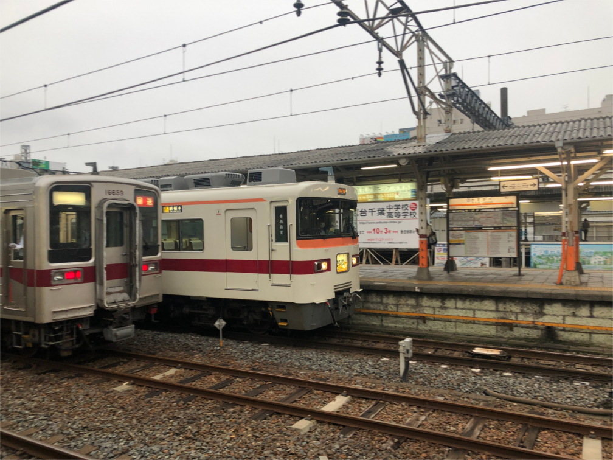
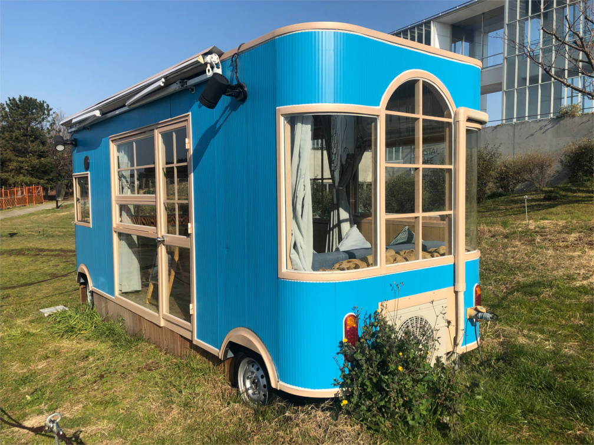
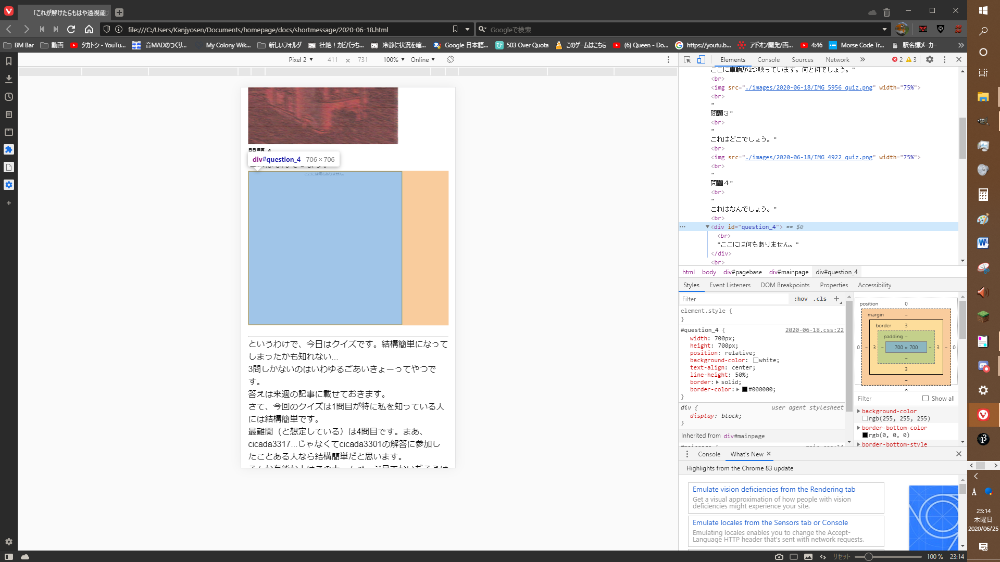
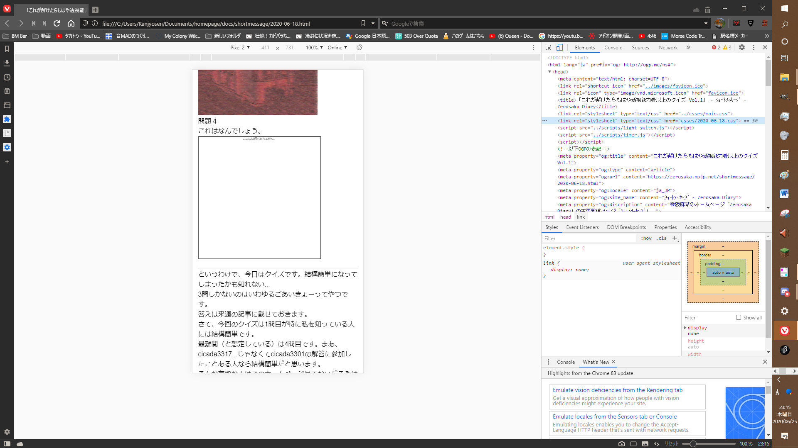
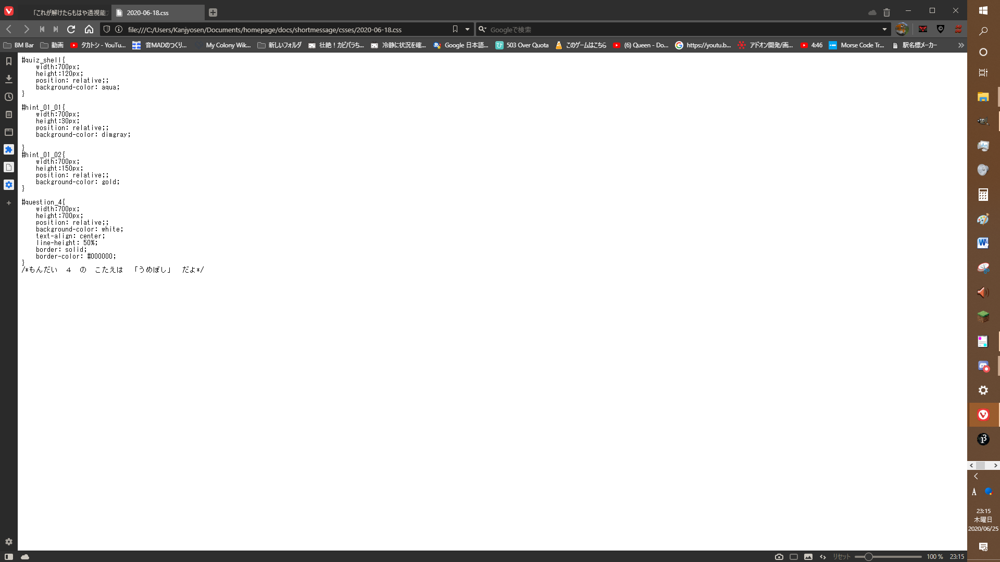
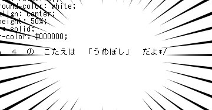

合ってたらもはや透視能力者以上の答え合わせ Vol.1
こんばんは。零阪麻琴です。さて、前回出したクイズの答え合わせです。
まず、一問目は抽象的にしまくって成田空港利用者しかわからない問題になってしまいました。
正解は、成田空港シャトルシステムです。黄色が車体、灰色が浮上装置を表しています。
現在、シャトルシステムの車輌は2両が風和里しばやまに保存されています。休日には車内を開放しているそうなのでぜひ行ってみてはいかがでしょうか。
二問目は、非常に画像をぐちゃぐちゃに加工したがためにわからなかった上に鉄道好きにしかわからない問題だったので、全然わかりにくかったことと思います。
正解は、東武10000系と東武350系です。こちらの画像をご覧ください。

これが加工前の画像です。加工後の写真には少しの色くらいしか痕跡が残りませんでしたね。
三問目は、江戸川区民の方々だったらわかったかもしれませんね。
正解は、葛西臨海公園でした。こちらも加工前の画像をお見せします。

こちらは面影が結構残りましたね。なんか色調加工のせいで地獄みたいになりましたが笑
さて、最後の四問目ですが...これは少しばかり技術的な手を使う必要があります。



...

というわけで、第４問の答えは「うめぼし」でした！
さて、今回は結構内輪ネタとかが多めになってしまったので誰もが知ってそうな題材でまたやってみたいですね。
では、また次回の透視能力者以上クイズでお会いしましょう！
ここまでのご読了ありがとうございます。Youtubeチャンネルの登録も宜しくお願いします。
Tweet
記事一覧に戻る
Consoles